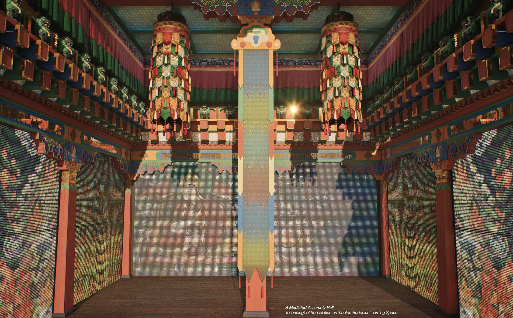
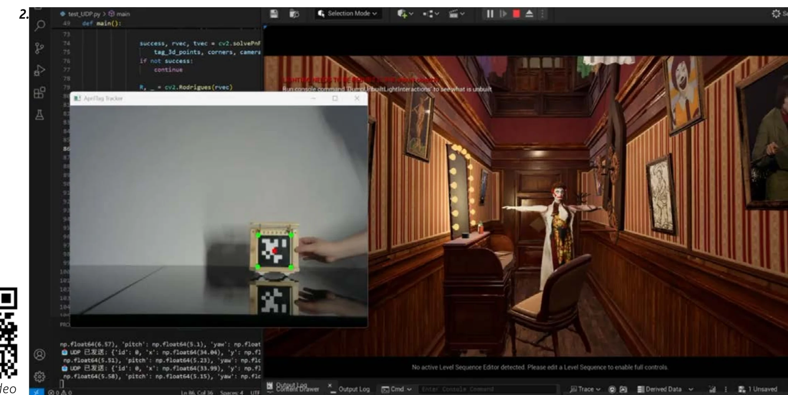
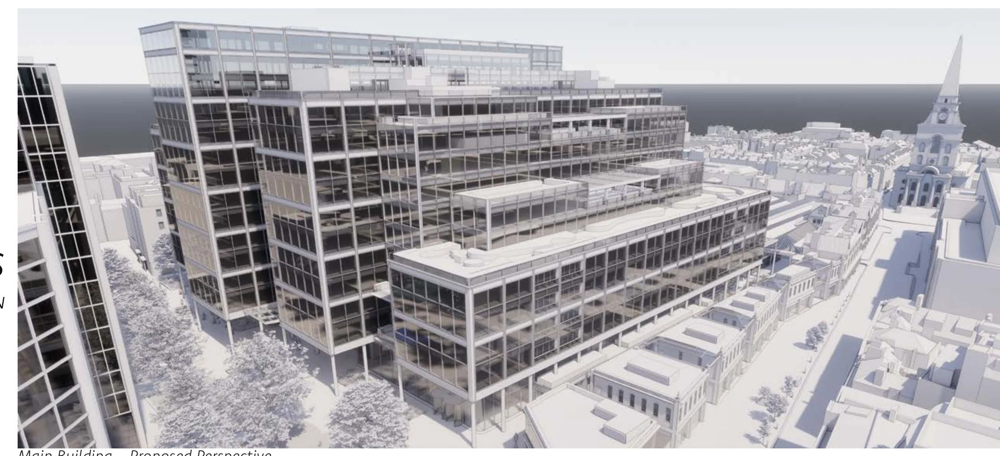

Selected work / 2026London
Systems for
spatial experience.
Generative AI, real-time interaction and professional architectural delivery.
Three projects showing how I move between creative intent, technical systems, physical space and coordinated implementation.

01 / Generative AI + roboticsSacred
Sacred
Intelligence.
Spatial capture, contextual memory, Seedance generation and gesture-driven robotic fabrication assembled into one multimodal system.
Python · FastAPI · Zep · Local LLM · Seedance API · p5.js · 3DGS
02 / Real-time performanceNo Curtain
No Curtain
Call.
Immersive theatre linking physical objects, live performers and a virtual environment through tracking and motion capture.
Unreal Engine · AprilTag · Inertial motion capture · VR
03 / Professional practice1
1
Spitalfields.
Stage 2–3 design development, Revit model coordination, drawing packages and visual communication at Foster + Partners.
Revit · Rhino · Enscape · AutoCADAcross the three projects
Capture & representSpatial data, real-time environments, coordinated BIM
Connect & orchestrateAI services, tracking systems, interactive workflows
Communicate & deliverPrototypes, performances, drawings and professional visualisation